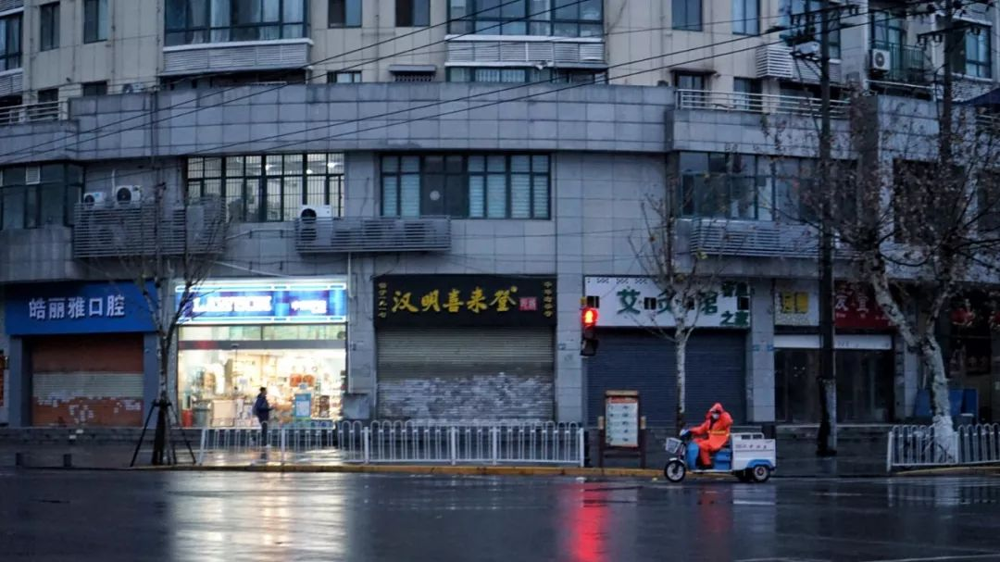
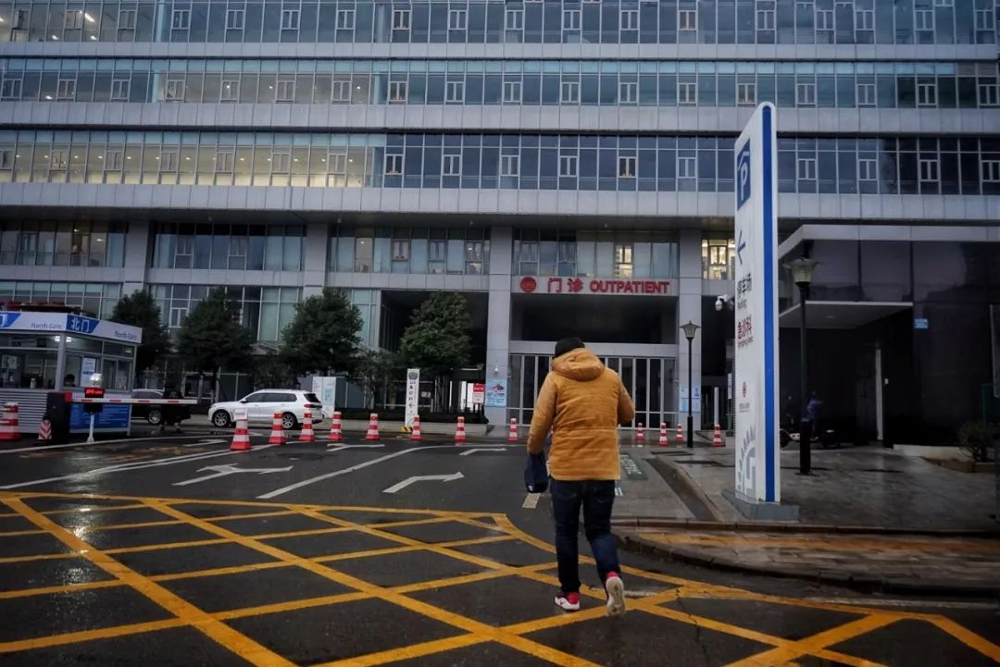
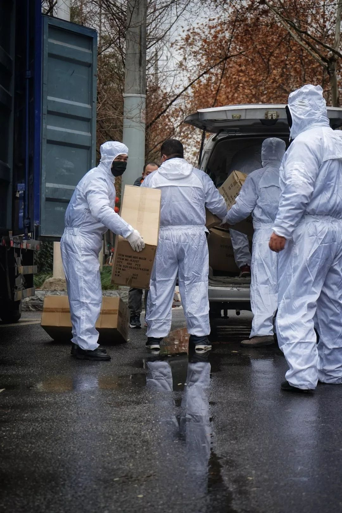
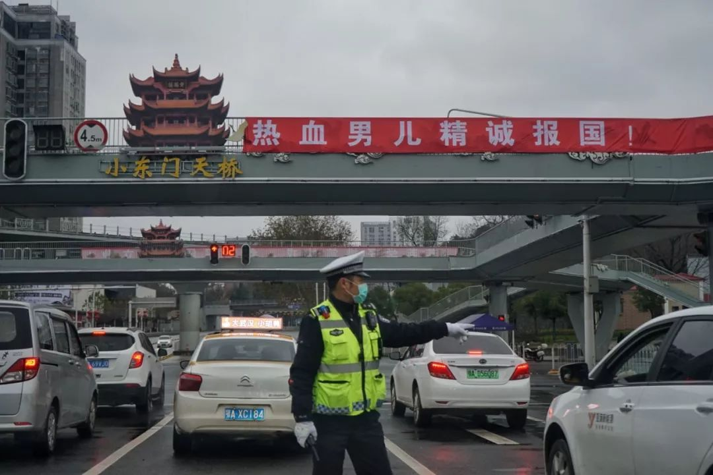

被清空的武汉：一座没有陌生人的城市
原文链接 备份链接 武汉封城后的逆行者 空荡荡的武汉城区。自1月23日10时起，武汉全市关闭公共交通。本刊记者/黄孝光 摄（下同） 1月23日，武汉封城，此时，护士梅伊和胡云云成了逆行者。 她们是大学同学，毕业后分别去了武汉华润武钢总医院 …

武汉“封城”后公共交通停运，自1月24日开始，路上开始出现民间自助形式的车队。私家车主轮班，车队昼夜不停，每天接送医护人员、运输医疗物资，每送一趟要用75%酒精浓度的消毒液喷洒一遍车辆，油钱、防护口罩、消毒液都自掏腰包。据媒体报道，参与的志愿者已超过4000人。他们就像城市“封城”后的毛细血管，连通被堵住的动脉，希望通过自己的力量，为共同留在这里的人提供一些帮助。

1月26日，“封城”第四天，中心城区机动车“禁行”首日的武汉市区。
文|王丹妮 李晓芳
编辑|陶若谷
1
1月26日凌晨，杨林所在的微信群炸了，志愿者的车不在许可上路范围内，群消息一条接一条弹出来，“收到短信冇？（方言）”、“到底么回事？”、“能不能上路？”
几小时前，武汉市疫情防控指挥部发布第9号通告，自26日零时开始，除经许可的保供运输车、免费交通车、公务用车外，中心城区实行机动车禁行管理。随后市交管局又作出调整，对禁行机动车通过手机短信提前24小时告知车主，未接到短信通知的可以通行。
群里持续活跃到凌晨3点，29岁的杨林强迫自己闭眼睡一会，打算第二天照常上路。按照之前的预约，他要在早晨5点起床，先接一个武汉大学人民医院的医生上班，然后是中山医院的护士、亚心总医院的医生、汉口医院的护士……连着三天，他都在这个时间出发，开上自己的奔驰车，穿梭在武汉的13个城区之间，接下班最晚的护士，送上班最早的医生。
那天早晨，街上的车少了很多。他估算，车队里大概有200个司机担心被扣分，把握不好政策，不敢上路。往医院运送酒精的途中，他被交警拦下，没有查他通行证，只说“不要再出来了”。
三天前市内公交停运，杨林在微博看到医护人员上下班没车，就发私信联系，接送了三个人。之后求助者越来越多，他拉来几个平时一起听现场演出的朋友，组建了医生出行互助群，成立“鲁磨路救援”车队。
鲁磨路是武昌的一个地名，知名现场音乐演出场地 VOX 所在地。在这座“朋克之城”，杨林和这群朋友音乐品味比较一致，经常约着去那里看摇滚乐演出。让杨林没有想到的是，摇滚青年组车队很靠谱，一晚之内，私人小群迅速扩大成4个近500人的大群，司机和医护人员超过1500，私家车主占到四分之一。

1月26日，杨林给车队志愿者发放免费酒精用于车辆消毒。
尽管全市征集了6000辆出租车，分配给中心城区每个社区3到5辆，为居民提供免费服务，但这些车远远不够。
就在1月26日凌晨1点多，一位年轻女孩在朋友圈发布求助信息，希望能有车接。女孩和她的父母都是新型冠状病毒肺炎患者。三个人分别在不同医院治疗，而她的父亲刚刚去世，她要从医院出发，把父亲的身份证送到他所在的医院，才能将遗体火化。110没人接，公共交通瘫痪，她找到了李小熊组建的志愿车队。
微信群沉默了好久。为了保障司机安全，车队第一大原则就是不接送确诊或疑似患者，避免交叉感染。而受到新限行令的影响，也出于对车主健康的担忧，李小熊本来已经在25日深夜决定，停止接送医护人员。
但女孩已经没有其他办法。一位司机硬着头皮接了，穿上防护服，戴上口罩、护目镜，顺利把女孩送到医院。那位志愿者一回到家，马上用消毒液彻底清洁了一遍车辆，把衣服全脱下来，又洗了一遍澡，才跟家里人见面。他的车在未来几天也没办法继续服务，需要自我隔离一段时间才能外出。
而处理完父亲后事，女孩又回到救治中心。她回复的信息显示，1月27日早晨，她又开始发烧。
这几天，李小熊手机的“滴滴”声总是以“秒”的频率不停响起。“每天点手机就不知道要点多少下”，她说，事发突然，车队也没有更高效的服务方式，只能采用笨办法，一刻不停盯着手机，将医护人员的需求、物资运送的地点、联系方式及时转到车主群里，能接的司机会在群里回应，双方再对接。
组建车队，她起初只是顺手发了个朋友圈，让在附近需要去医院上班的人联系她，可以接送。结果复制转发的人越来越多，还有院长看到朋友圈，把消息转到医院内部群。李小熊怀疑，那天可能全城的医生都给她打电话了，“滴滴”声一刻没停过。

1月26日早上，志愿者送一位医生到武汉市亚心总医院上班。
2
市民的需求几乎都在微信群里。有医生提前结束休假，赶回来待命，因为“封城”没办法坐火车，求助志愿者从周边地区开车带进城；寻找拥有A2驾驶证的司机，帮医院驾驶救护车；便利店老板免费提供矿泉水和泡面，希望送到医生手上。
30岁的周鑫第一次出车，就接了一个要去武汉市中心医院的医生。他戴上三层口罩，准备好84消毒液，在车上放了医用消毒酒精。顺利抵达后，又有一个市第五医院的护士刚下班，周鑫犹豫了一下还是接了，电话一打过去，护士就忍不住恳求，“她当时就说希望我快一点，因为她真的特别累特别困。”
从医院到那位护士的家大约七八公里，周鑫不熟悉路况，女护士一边给他指路，一边倾诉——病患实在太多，她们人手不够，物资也缺，大多数病人还是老人，血管不明显，扎针困难，有些老人情绪激动，会对护士口出恶言。
护士告诉她，几乎每个急诊处的医生护士都哭过。她们人手不够，上班基本五六个小时不能休息，没时间喝水，嗓子干疼，只能让同事给她打生理盐水紧急补充水分。女护士最后说，有时也想不干了，家里也有小孩老人。周鑫不知道怎么安慰。晚上他刷朋友圈，看到女护士又准时发了信息，寻找明天能送她上班的志愿者司机。
周鑫所在的车队，有几个司机已经检测出发热现象，被车队管理人员勒令停止服务，自行隔离。他住的小区晚上也有救护车开进来，抬走两个疑似患者。他有点紧张，考虑到老人孩子，决定暂停志愿服务。

1月26日，司机志愿者帮忙卸货。
没有人知道究竟是什么时候，疫情什么时候开始在华南海鲜市场悄然扩散。但40岁的女店主王娜早在去年12月中旬，官方通报第一例不明原因感染的肺炎之前，就从医生朋友那边得知，“事情可能在短期内解决不了”。
她往家里的冰箱塞了15只鸡、20条鲷鱼和10斤红菜苔，早早囤好了食物，还提醒自己所服务的公益机构，提前准备好防护用品。1月23日凌晨“封城”的消息发布时，她正在武汉西高速口附近的加油站装运100 箱酒精，一起装卸的8 个司机朋友里，只有她觉得“意料之中”，大家笑着骂她“嘴巴毒”，“好的不灵，坏的灵”。
2003年“非典”期间，她就是运送物资的司机，当时在部队，接到任务加入支援广州和北京的车队，“一台车，一个人，几千公里的路，几天都不能休息”。17年后，类似的事情在她居住的城市重演，她相对镇静。
好几个朋友打算赶在高速封闭前离开武汉，王娜没打算走。她听说“鄂A”在外地不敢上路，去海南的朋友被小区重点检查，去南京的朋友也被测体温、查询出行记录，“去哪都一样”，王娜放弃了跟女儿自驾游的新年计划，打算留在武汉，“这种情况下，物资和运力的紧缺，是肯定的。”
“封城”之后，多家医院物资紧张的消息传遍全网。随后装满口罩、酒精、防护服的卡车从各地开往武汉，却堵在城市边缘的入口处。
来自市外的捐赠物资，一部分可以通过武汉市红十字会，发放到各定点医院，而一些民间机构和居民直接捐赠的物品，要进入武汉市难度不小。医疗设备要符合医疗级别，同时要证明是救援物资，关卡处才会放行，有些还要出具医院的接收证明。“开这些证明非常麻烦，”李小熊说，“刚封城前两天，我们老被卡在高速的出口上，不给放行。”
拿不出证明，她只能承担市内运输，像蚂蚁搬家，往这个医院送两箱防护服，那个医院运几万只口罩。她也补充道，绿色通道开设后，流程简便了许多。
王娜2.0T排量的越野车里，塞满12箱60cmx40cm的纸箱，副驾驶座位上也堆满了，全是酒精、口罩等医用物资。有一次她被交警拦下，没有“市内通行许可”证件，她朝警察吼，“没证，你要扣分就扣吧！等我忙完再来处理这些事！” 旁边年长一些的交警冲她摆摆手，让她赶紧走。
像她一样开着私家车，凌晨赶到高速路口的志愿者不在少数。物资入关后，一些零散的捐赠品需要私家车来送，还有一些不方便进入城区的货车也会把物资卸到高速口，通过志愿者的车转运。面包车、小型轿车、越野车就像城市的毛细血管，连通被堵住的动脉，带着物资向这座8494平方公里的城市延伸。

1月26日，司机志愿者帮忙卸货。
3
为了方便像王娜这样的司机取货，有货车司机趁着天黑把车往市区方向多开20多公里，停在酒店停车场，“这样你们近一点，不用那么辛苦。” 接收一批口罩时，王娜跟货车司机简单聊了两句，得知他已经两天没合眼。
这几天，货车司机很多往返于仙桃和武汉之间。仙桃是湖北的口罩产地之一，多家工厂通宵赶工，货车司机和很多买口罩的人一样，日夜守在工厂门口，产出一箱，搬走一箱，他告诉王娜，“大家都缺货，谁先抢到就是谁的。”
26日早晨，同样等在高速口的刘威在车里睡着了，6点左右被其他车友叫醒。他前一晚刚刚加入，一直抢不到订单，“其他志愿者的速度太快了”。直到凌晨2点接到一个转运物资的活儿，货车司机说不准几点到，20多个司机都和他一起在夜里等着。
看到一车防护服、口罩和鞋套抵达武汉，他们立即装车，一个小时内完成分配，9点之前，这批货物会分别送到协和医院、同济医院、武汉市中心医院等需要的地方。
刘威是自由职业者，“封城”之后几乎每晚都躺在家里沙发上闲着。母亲在江夏区一家社区医院里当保洁，每天去医院两次，把医生护士弃用的口罩等防护品用黄色塑料袋统一整理好，交给上一级医院收走。
父亲在中建三局的项目当保安，建设火神山医院紧急召集，三局要求增调集装箱支援，父亲和十几个六七十岁的老人都去加班，将电缆从箱子里清空。看到父母都在为疫情而忙，刘威觉得惭愧，于是通过朋友介绍加入志愿者车队。
弹出消息的“滴滴”的声像是一个巨大的缺口，怎么也填不满。王娜感到无力，民间志愿者没有任何资金补贴，她不知道这样的日子还要持续多久，“每天光油钱都要四百多”。

1月26日，交警集中拦下过往机动车，叮嘱“不要再开车出门”。
相比于交警的阻拦和政策的限制，更让她感到难过的是旁人的不理解。群里有个开农庄的提出，以低价向医院提供一批蔬菜，结果被认为是打广告谋私利，把他踢出群了。还有一次深夜送货，王娜费劲把几大箱口罩搬下车，收货的人一边在收条上签字，一边嘀咕，“一个女人大晚上出来跑什么，怎么不在家好好待着？” 忙完一天回家躺在床上，她翻看新闻，看到有网友留言说志愿者是“吃饱了撑的，多管闲事”，眼泪一下子就出来了。
王娜有时候也在想，做这些到底是为了什么。她始终瞒着老家的亲戚，不敢在朋友圈发布任何做志愿者的消息，怕家人担心。大年三十，好几个亲戚打来语音电话，她在开车，几次拒接电话，无奈之下，最后接了嫂子的视频电话，骗她说没有出门，只是到车里拿点东西。嫂子再一次叮嘱，不要出门乱跑，照顾好女儿。
丈夫去世得早，王娜的女儿在单亲家庭长大，没有安全感。凌晨两点，王娜出门前，女儿拉着她说，“现在外面这么危险，如果你出事了，我怎么办？”王娜心里发酸，但微信群消息一直在响，她忍不住去看，女儿拦不住，最后说，“一个人待在家里要疯了”，求妈妈带她一起出门。
已经进入“封城”第四天。1月26日阴云聚集在城市上空，断断续续飘着雨。长江大桥、楚河汉街、江汉路步行街几乎见不到人影，只有几个穿橘色外套的环卫工人晃动手中的扫帚。除了几家超市，街边商铺几乎都拉着卷闸门，偶尔有店铺门口摆着花篮，黄色与白色在清冷的街道上显得扎眼。
最近，杨林每天几乎只睡两个小时，吃几个面包。中午群里的出行需求少了，他开车去东西湖区的医药厂，用朋友自发筹集的经费买酒精和口罩。晚上又赶去武汉西高速路口附近的三丰加油站，在运送物资的货车抵达之前做好准备。
“从没见过车这么少的武汉。” 他左手扶着方向盘，右手时不时翻看微信群里的消息，车速保持在30码。
（为保护受访者隐私，文中人物均为化名）

1月26日，司机志愿者完成卸货后，清点物资。
后台回复”读者群”, 加入更多讨论

小昼
微信扫一扫赞赏作者 赞赏
长按二维码向我转账
受苹果公司新规定影响，微信 iOS 版的赞赏功能被关闭，可通过二维码转账支持公众号。
原文链接 备份链接 武汉封城后的逆行者 空荡荡的武汉城区。自1月23日10时起，武汉全市关闭公共交通。本刊记者/黄孝光 摄（下同） 1月23日，武汉封城，此时，护士梅伊和胡云云成了逆行者。 她们是大学同学，毕业后分别去了武汉华润武钢总医院 …
原文链接 备份链接 武安医生（化名）所在的医院是孝感市三家抗疫医院之一。距离武汉66公里的孝感是距离武汉最近的地级市，截止到1月28日上午，有确诊病例173例。与暴风眼武汉一样，以孝感为代表的武汉周边小城也正在经历着决战时刻。 坐诊之 …
原文链接 备份链接 在这场抗击新病毒的战争中，一线医护人员不得不为自身防护揪心，他们和医院、捐赠人一起被迫卷入一场医疗物资的募捐赛 文 |《财经》记者王丽娜 辛颖 编辑 | 王小 这是历次疫情中，一线医院大批量第一次直接向公众募捐，也是 …
原文链接 备份链接 新型冠状病毒疫情像是一场突如其来的阴霾，在这个冬天笼罩了华中大地。相较于最受关注的武汉市民，周边城市的人们，像是处在阴霾边缘，遭受侵袭，却又不常被看见。面对重重困难，孝感、黄冈、黄石、信阳、荆州、天门……各个城市的百姓 …
原文链接 备份链接 他觉得自己像一个巨大的电插座，身上插满了孔，求助信息和资源提供信息被一起插到他身上，他再来牵线对接。 文 | 谢婵 李叙瑾 编辑 | 小豆 22岁的梅浩宇窝在出租屋里，吃光了13包泡面和3大袋零食，每天睁开眼睛，他就开 …